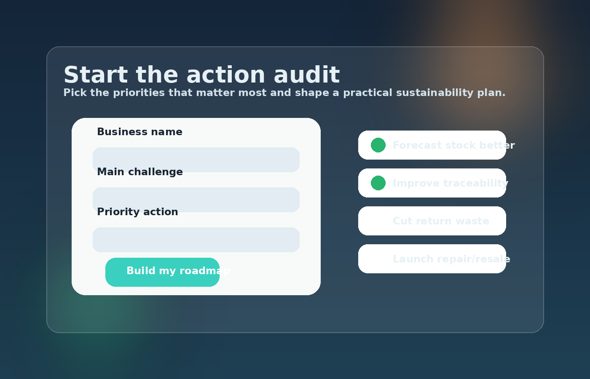

Action audit form
This form demonstrates how a business could identify its biggest sustainability priorities before choosing which digital tools and operational changes to introduce.

The form is static for assessment purposes, but all controls work and can be submitted like a normal web form.